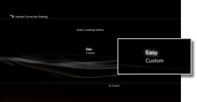

Settings > Network Settings > Internet Connection Settings (wired connection)
Internet Connection Settings (wired connection)
Set the method for connecting the system to the Internet. When making a wired connection using an Ethernet cable, you can follow the on-screen instructions to automatically select the basic settings.
Network settings vary depending on the network environment and the devices in use. The following procedure describes a typical setup when connecting to the Internet using an Ethernet cable.
1. |
Connect an Ethernet cable to the PS3™ system. |
|---|---|
2. |
Select |
3. |
Select [Internet Connection Settings]. |
4. |
Select [Easy].  After you confirm the network configuration, a list of settings will be displayed. |
5. |
Save your settings. |
6. |
Test the connection. |
7. |
Confirm the connection test results. |
 (Settings) >
(Settings) >  (Network Settings).
(Network Settings).Hint
If the connection fails, follow the on-screen instructions to check your settings. Refer also to the information from your Internet service provider and the instructions supplied with the network device in use.